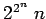

Ordnet man jeder Aussagenvariablen eines Ausdrucks einen Wahrheitswert zu, so spricht man von einer Belegung der Variablen. Mit Hilfe der Wahrheitstafeln für die Junktoren kann man einem Ausdruck für jede Belegung einen Wahrheitswert zuordnen. Der im vorigen Abschnitt angegebene Ausdruck repräsentiert somit eine dreistellige Wahrheitsfunktion, eine
(BOOLEsche Funktion). In der folgenden Tabelle ist eine Belegung der Variablen angegeben.
| Beispiel |
|
Jeder aussagenlogische Ausdruck repräsentiert auf diese Weise eine n-stellige Wahrheitsfunktion, d.h. eine Funktion, die jedem n-Tupel von Wahrheitswerten wieder einen Wahrheitswert zuordnet. Es gibt -stellige Wahrheitsfunktionen, insbesondere 16 zweistellige. |